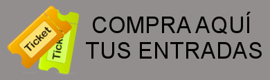

Fecha y lugar:
Kursaal de San Sebastian, el viernes 22 de Febrero a las 8:00 PM.
Formas de comprar entradas:
- Por Internet
 - Las entradas compradas a través de Internet se pueden recoger en los cajeros de Servikutxa o directamente en las taquillas de Kursaal.
- Otras formas:
- Llamando al Telekutxa al 943 00 12 00
- Para más información: info@concierto-solidario.es
Precios:
Los precios de las entradas son de 20 euros para la zona A (amarilla) y de 15 euros para la zona B (verde).
Ver mapa más grande